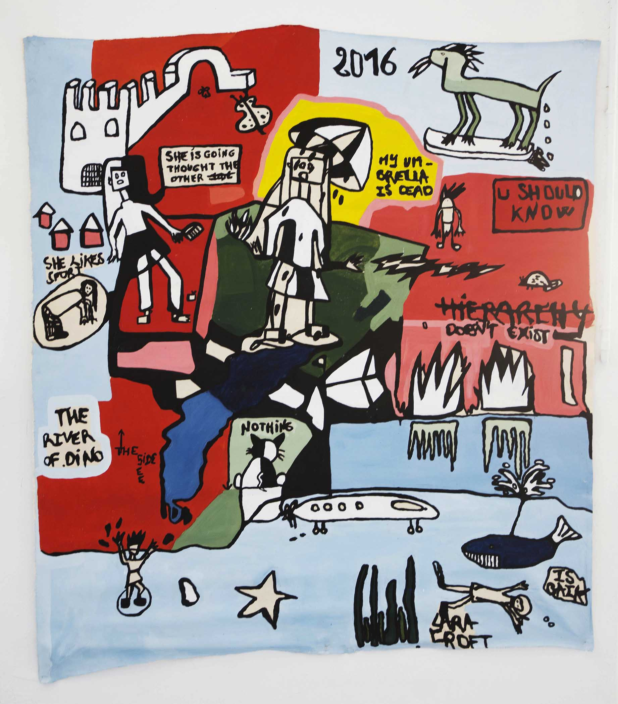

This serie is in progress. It present a group of nine paintings for the moment. It is many inner spaces, occupied by sexy cyber punk and scary girls and boys robots. From time to time there are swimming, playing, dancing, drinking, smoking cigarets, listening to music, sometimes together, occasionnaly alone. This serie introduce animals characters, towns and landscapes from fantasy wild world. Taken inspiration from her friends, characters of her entourage in sectorized and colored spaces. They are recognizable by their dresscode or their gestural position. You never really know who is it.
Paintings can talks about stars in Cannes during the global warming. Peoples talk about their last Versace brand purchase, one of them is vegan but she does not support it. A girl is under the rain with an umbrella in the middle of a dysto- pian world, but she gets the rain on it. She has magical powers, she throws balls of fire and electricity. Cruella D’enfer cut the tweed-trousers of an other girl, who loves sport.
A story of a trip in Scotland between two peoples in love. A man wi- thout a face throws magic spells on the city while the background is melting. It draws a plural ballad in the Soviet depths, you will find some fat kicks with reasoning lubricant. With style on flying toast of robotic post rock, the jungle will lead this galactic fleet in the psychocao- tic woes. It must be a cake with lots of whipped cream sprinkled with poorly recorded classics.

Cimetery’s Night in Glasgow, 2019, acrylic on canvas, 180 x 180 cm

Big Firms, 2018, acrylic on canvas, 220 x 200 cm

She Likes Sport, 2017, acrylic on canvas, 160 x 140 cm

Jump, 2019, acrylic on canvas, 200 x 200 cm

Use Gold To Talk To Me, 2019, acrylic on plastic and canvas, 200 x 200 cm

Bony and Clyde, 2017, gouache on canvas, 150 x 150 cm

Bitch You Deserve It, 2017, mixed media on canvas, 160 x 200 cm